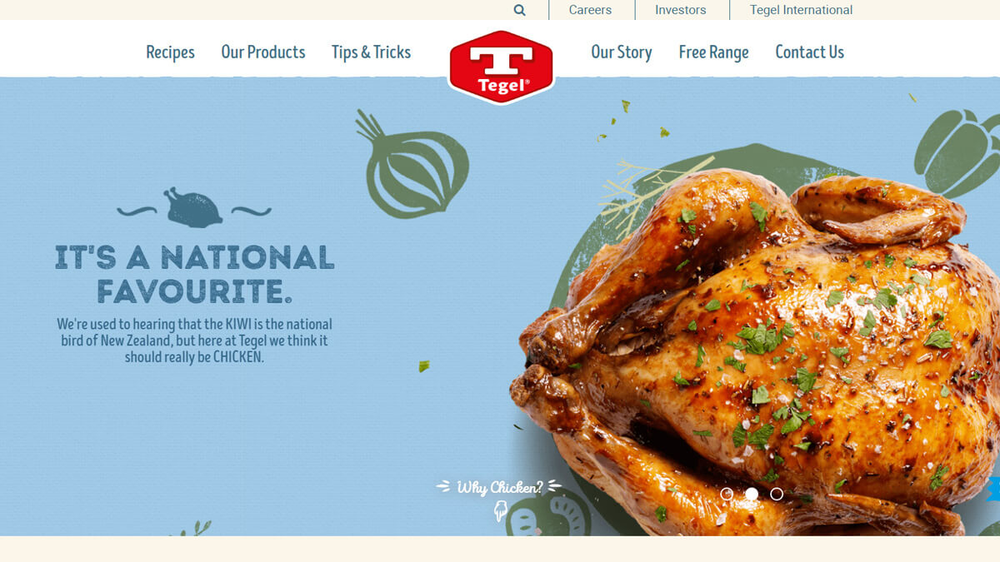
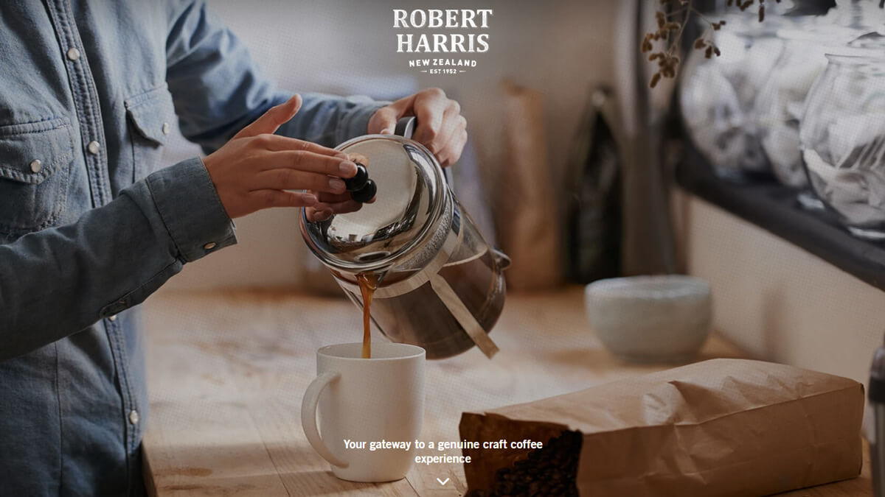
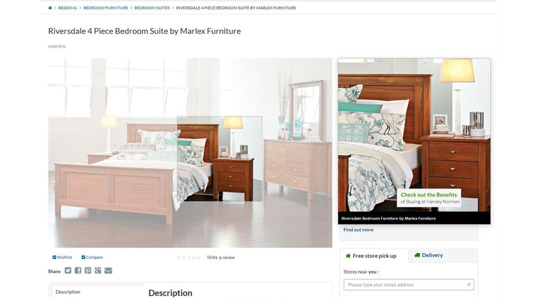
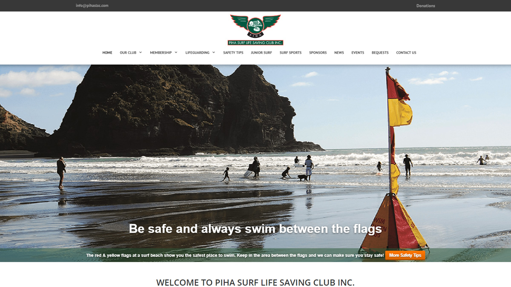

Full Website Builds
There are many elements to think about when building a website and it can be an overwhelming experience. I hope to demystify the process through my years of experience and help you create something that solves your business needs and looks great at the same time.
TROW Group
I built the website TROW Group for the Pasifika based construction and deconstruction company.
-Wordpress
Visit: trowgroup.co.nz
Samsung Esis
During my time at Samsung I built the code for the Samsung e-store that shows the product range in the Samsung look and feel. This code had to be tailored to work with each retailers CMS. Over the following years I managed this, added new products and sections along with adding new functionality like dropdown navigation.
-Bespoke HTML build
-Bootstrap
Visit:
PB Tech
Harvey Norman
Noel Leeming
Kitchen Things
Heathcotes
The Market
JB Hi-Fi
Hamish Cameron Architecture
This architects portfolio is a bespoke site. I created a simple UI which lets the full width images convey the work.
-Wordpress
-Bootstrap boilerplate
-Advanced Custom Fields
Visit: hcarchitecture.co.nz
Pattillo
This website features a fullwidth cover video, blog, webinar integration, custom animations, bespoke design and strong call to actions.
-Wordpress
-Divi theme
Visit: pattillo.co.nz
Refugees as Survivors New Zealand
I was in charge of creating the website for RASNZ that helps refugees settle into the NZ way of
life.
-Wordpress
-Divi theme
Visit: www.rasnz.co.nz
D4
This website was built to showcase an internal tool for the Dentsu Aegis Network NZ.
-Wordpress
-Divi theme
Visit: d4.digital
When The Cats Away
In 2012 I designed and developed a website for a cattery in Napier. The site was originally coded
from scratch then recreated in WordPress.
-Wordpress
Visit: whenthecatsaway.co.nz
24/7 Gutter Guard
This Ecommerce website was built in 2019 to sell DIY home improvement for an Auckland based company.
-Squarespace
-Ecommerce
Visit: www.247gutterguard.com
Website changes
Tegel
I worked alongside the development team while this website was built and made ongoing changes once the site was live.
Visit: www.tegel.co.nz
Robert Harris
I worked with the team that pitched the website re-design and helped manage the development team. As well as making ongoing changes once the site was live.
Visit: www.robertharris.co.nz
Harvey Norman
I worked at Harvey Norman New Zealand where I updated over 600 images for the eCommerce website.
Visit: www.harveynorman.co.nz
Piha SLSC
I volunteered my time to be the Webmaster for the Piha SLSC website. Making updates, helping users, as well as creating and sending the email communications.
Visit: www.pihaslsc.com
Reach out and let’s explore the ways to create something great. Get in touch.